DL Model Interpretability Report
Comprehensive Machine Learning Analysis Dashboard - Instance 2
Prediction Summary
Instance ID:
2
Predicted Class:
4
Analysis:
The truck is expected to fail within 0-6 hours.
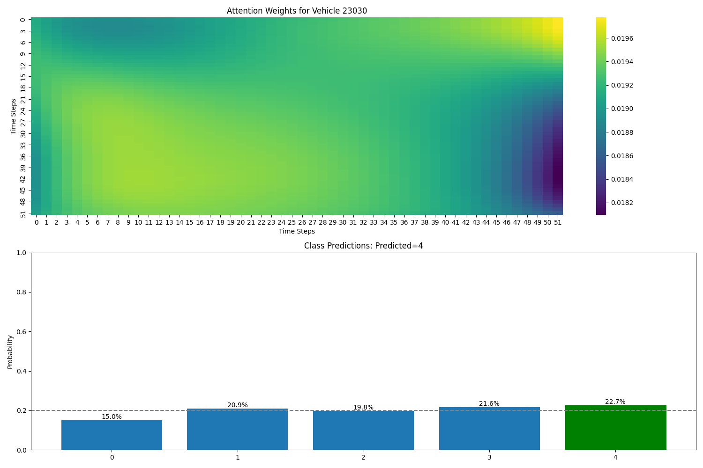
Attention Visualization Analysis
The attention heatmap above reveals which time steps the AI model focuses on when making predictions. Brighter colors indicate higher attention weights, showing the temporal patterns that most influence the decision. The probability distribution graph displays the model's confidence across all possible failure classes, with the green bar highlighting the predicted outcome.
Feature Importance Analysis
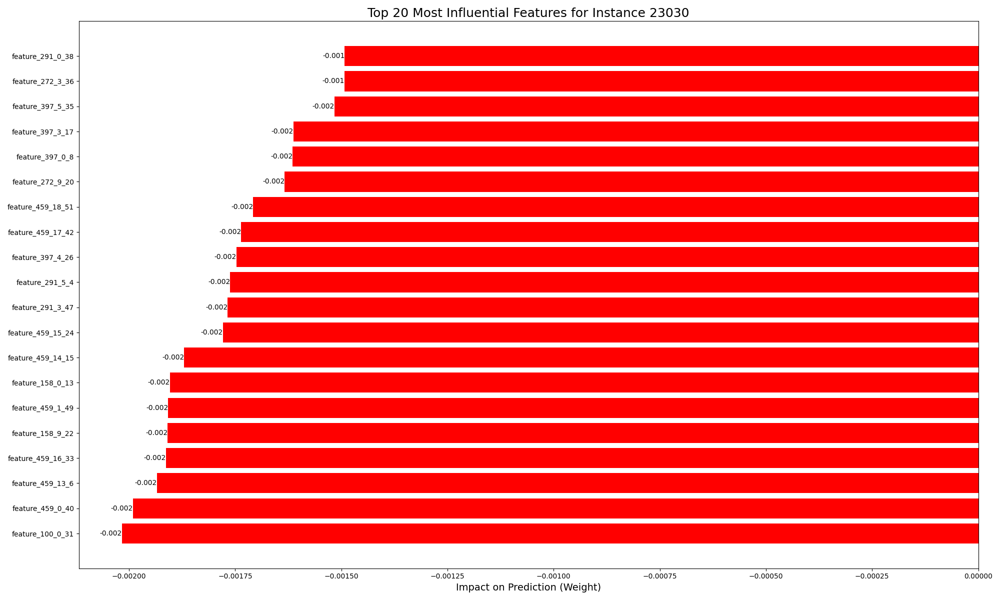
LIME Feature Impact Explanation
This horizontal bar chart displays the most influential features identified by LIME (Local Interpretable Model-agnostic Explanations). Features extending to the right (green bars) support the predicted outcome, while those extending left (red bars) oppose it. The bar length represents the magnitude of each feature's influence on the final prediction.
Detailed Feature Weights
| Feature Name | Weight Value | Impact Type |
|---|---|---|
| feature_100_0_31 | -0.0020 | Negative |
| feature_459_0_40 | -0.0020 | Negative |
| feature_459_13_6 | -0.0019 | Negative |
| feature_459_16_33 | -0.0019 | Negative |
| feature_158_9_22 | -0.0019 | Negative |
| feature_459_1_49 | -0.0019 | Negative |
| feature_158_0_13 | -0.0019 | Negative |
| feature_459_14_15 | -0.0019 | Negative |
| feature_459_15_24 | -0.0018 | Negative |
| feature_291_3_47 | -0.0018 | Negative |
| feature_291_5_4 | -0.0018 | Negative |
| feature_397_4_26 | -0.0017 | Negative |
| feature_459_17_42 | -0.0017 | Negative |
| feature_459_18_51 | -0.0017 | Negative |
| feature_272_9_20 | -0.0016 | Negative |
| feature_397_0_8 | -0.0016 | Negative |
| feature_397_3_17 | -0.0016 | Negative |
| feature_397_5_35 | -0.0015 | Negative |
| feature_272_3_36 | -0.0015 | Negative |
| feature_291_0_38 | -0.0015 | Negative |
Feature Weight Interpretation
This comprehensive table presents the numerical weights assigned to each feature by the LIME algorithm. Positive weights (highlighted in green) indicate features that support the predicted class, while negative weights (highlighted in red) represent features that oppose the prediction. The magnitude of each weight reflects the strength of that feature's influence.
Temporal Feature Analysis
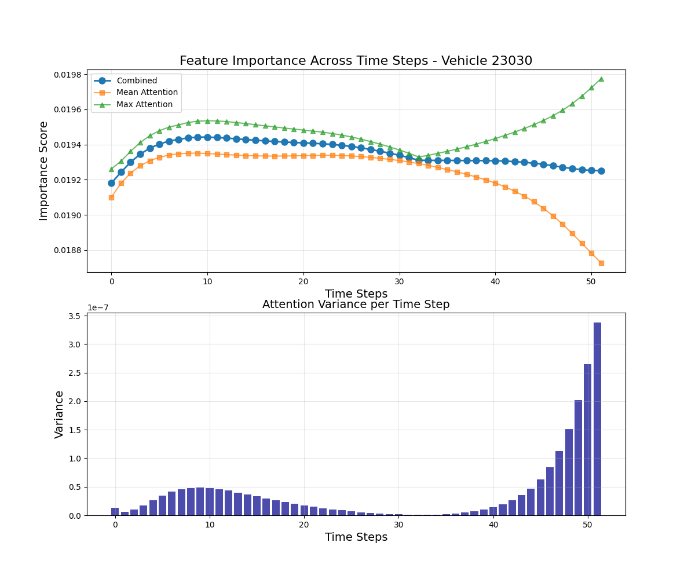
Time-Step Importance Analysis
This advanced visualization reveals which specific time points in the sequence are most critical for this vehicle's prediction. The attention-based importance scores show when the model pays the most attention during its decision-making process. Higher importance values indicate time steps that carry more weight in the final prediction, helping identify critical moments in the vehicle's operational timeline.
Time Series Pattern Analysis
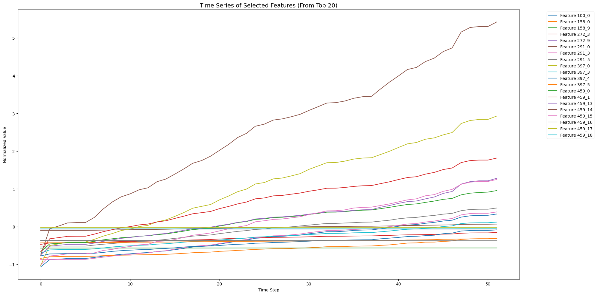
Temporal Pattern Insights
This time series visualization tracks the evolution of the most important features over time. Each colored line represents a different feature, allowing you to observe trends, anomalies, and relationships between features across the temporal dimension. Understanding these patterns is crucial for identifying early warning signs and system behaviors that lead to the predicted outcome.
Feature Correlation Matrix
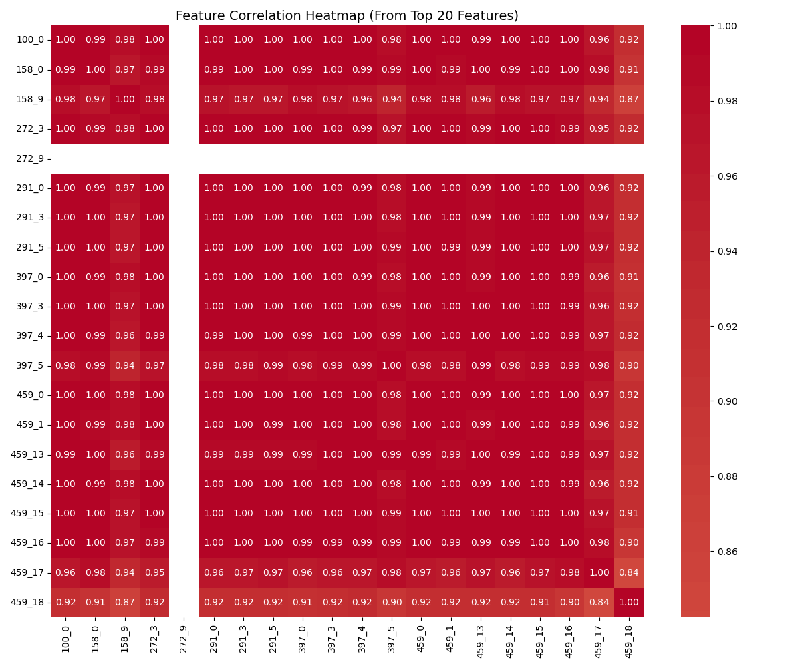
Correlation Insights
This heatmap reveals the strength and direction of relationships between the most important features. Dark blue indicates strong positive correlation (features move together), while dark red shows strong negative correlation (features move in opposite directions). Understanding these relationships helps identify feature dependencies and potential redundancies in the prediction model.
Feature Distribution Analysis
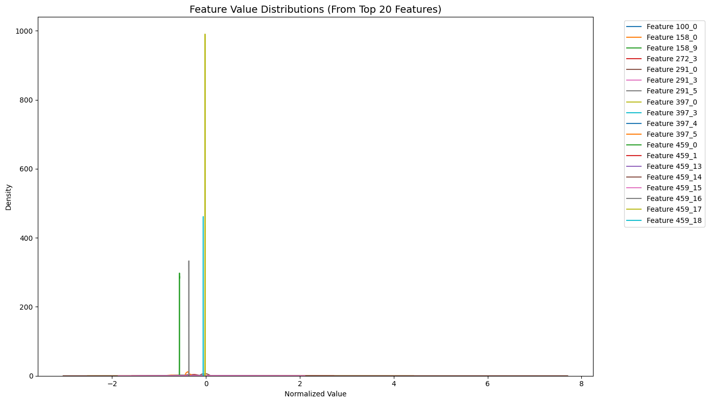
Distribution Patterns
These density curves show how feature values are distributed across the time series. The shape of each distribution provides insights into data normality, outliers, and central tendencies. Wide distributions indicate high variability, while narrow peaks suggest consistent values. This analysis helps understand the underlying data characteristics that drive model predictions.
Global Feature Analysis & Model Insights
Comprehensive Model Analysis Overview
This section presents comprehensive visualizations that analyze feature importance patterns across the entire dataset and all prediction classes. These global insights reveal how the model makes decisions across different scenarios, providing a deeper understanding of feature relationships and model behavior beyond individual predictions. The analysis includes permutation importance, SHAP values, and class-specific feature rankings.
Permutation Feature Importance (Bar Chart)
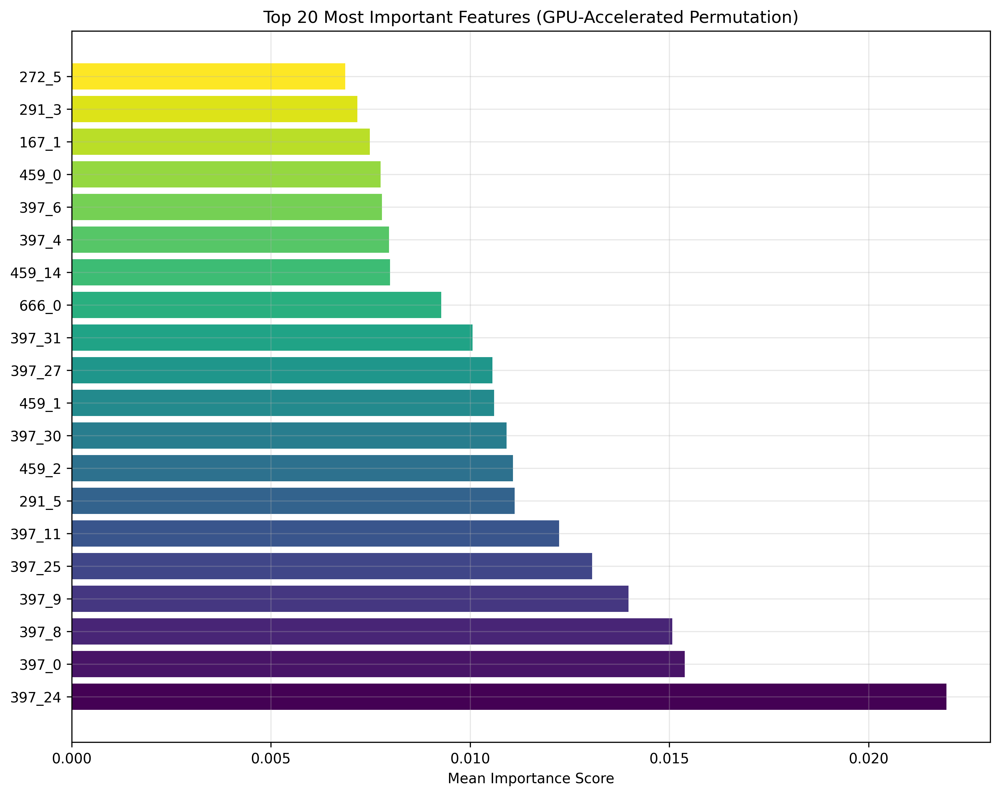
Analysis Details
This bar chart shows the top 20 most important features determined by GPU-accelerated permutation. The importance score indicates how much the model's performance degrades when that feature's values are randomly shuffled. Higher scores indicate more critical features for the model's predictions.
Class-Specific Feature Importance Analysis
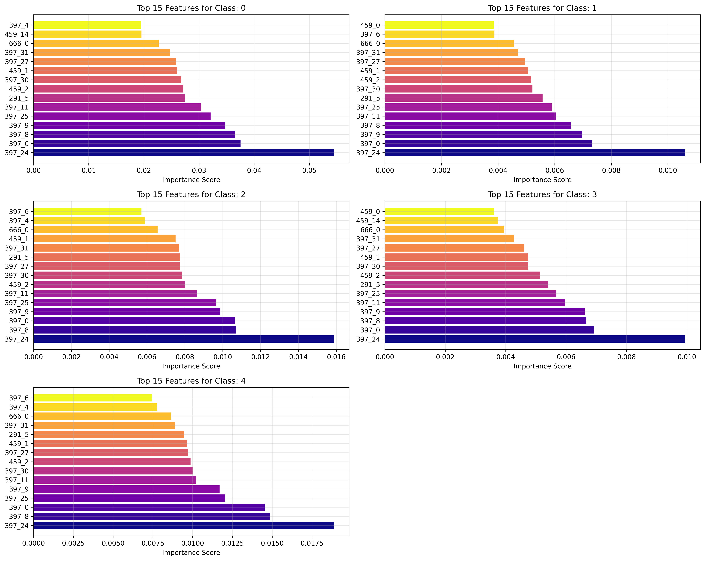
Analysis Details
These subplots show the top 15 features for each prediction class (0-4 representing different failure time windows). Each class has its own importance ranking, revealing which features are most predictive for specific failure scenarios. This analysis helps understand the model's decision-making process for different risk levels.
Feature Importance Heatmap by Class
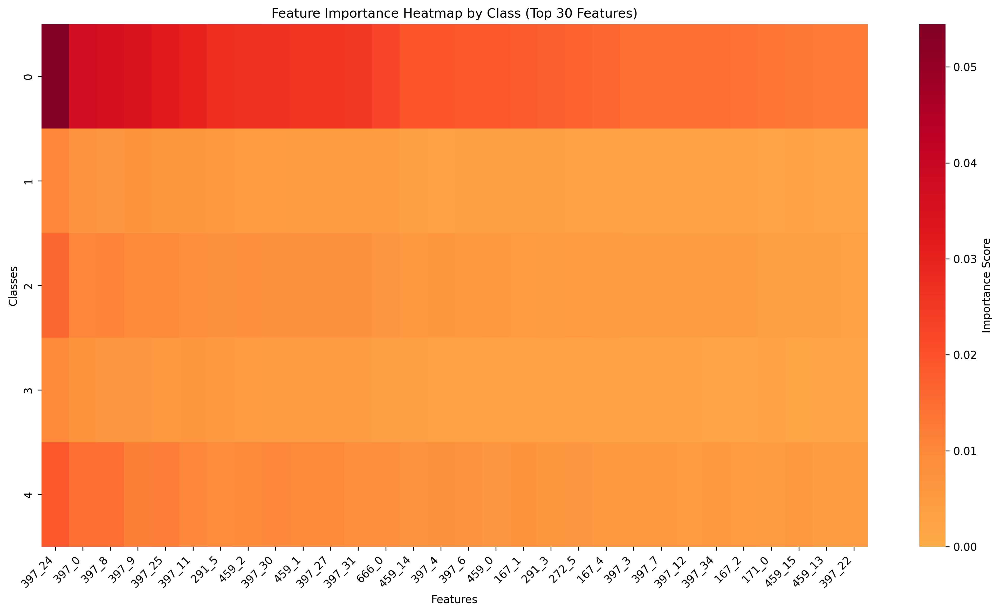
Details
This heatmap displays feature importance scores across all prediction classes (0-4). The color intensity represents the importance level for each feature-class combination. Darker regions indicate higher importance, helping identify which features are most relevant for specific failure time windows.
Feature Importance Variance Analysis
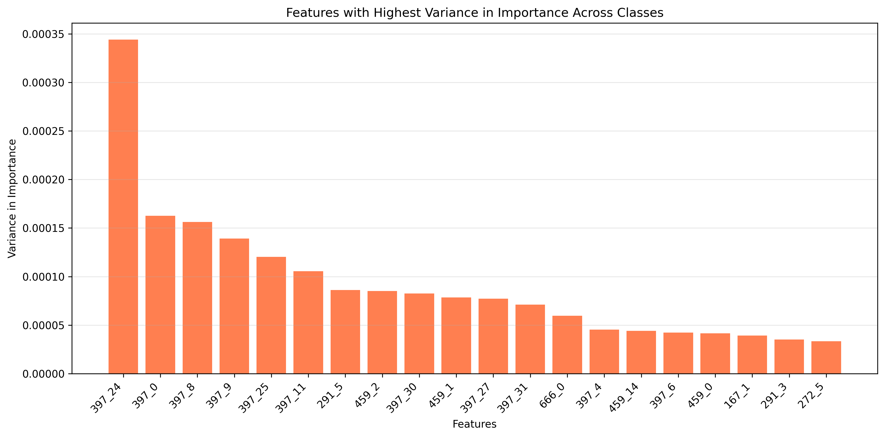
Details
This chart shows features with the highest variance in importance across different classes. High variance indicates that a feature's importance changes significantly depending on the prediction class, suggesting these features are particularly discriminative for distinguishing between different failure time windows.
SHAP Summary Plot - All Classes
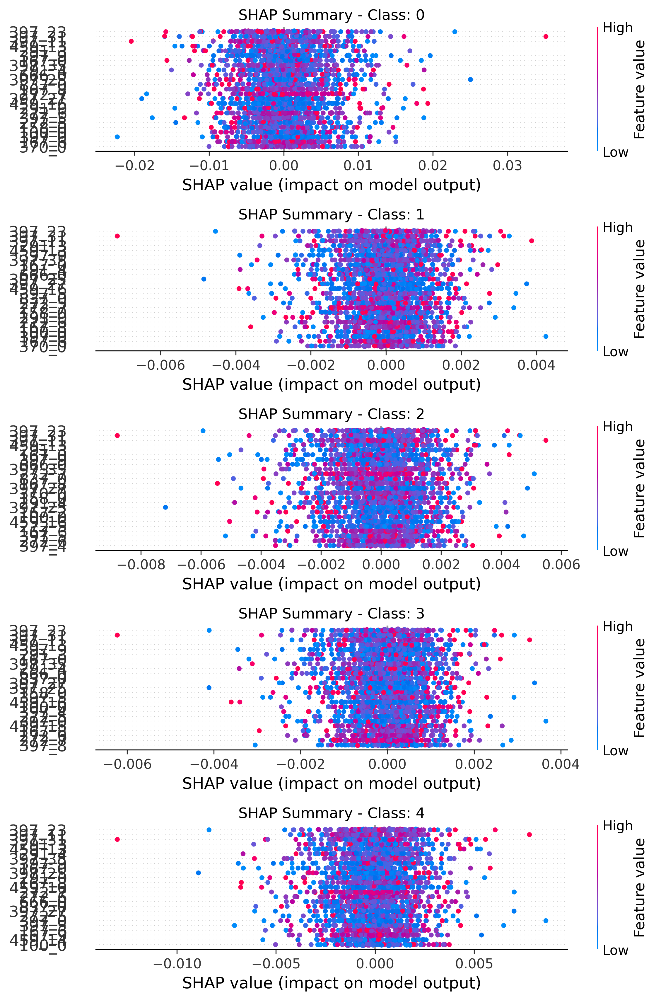
Details
This comprehensive SHAP summary plot shows feature importance across all classes simultaneously. The plot combines information from all failure time windows, providing a global view of which features are most important for the overall model performance. The color intensity and position indicate both the magnitude and direction of each feature's impact.
Beeswarm Plot - Class 4 (0-6 Hour Failure)
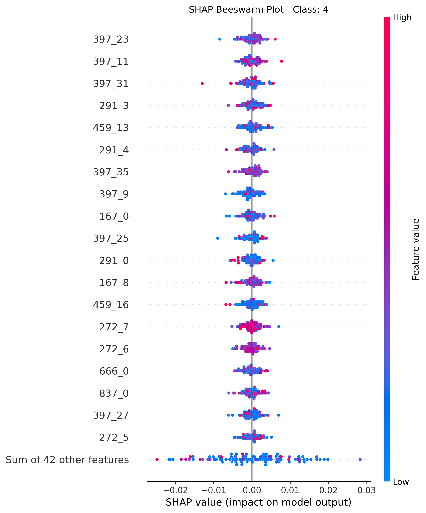
Details
This beeswarm plot presents SHAP values for Class 4 predictions (immediate failure within 0-6 hours). This represents the most critical failure category, and the plot reveals which features are most indicative of imminent system failure, providing insights for emergency intervention protocols.
Beeswarm Plot - Class 3 (6-12 Hour Failure)
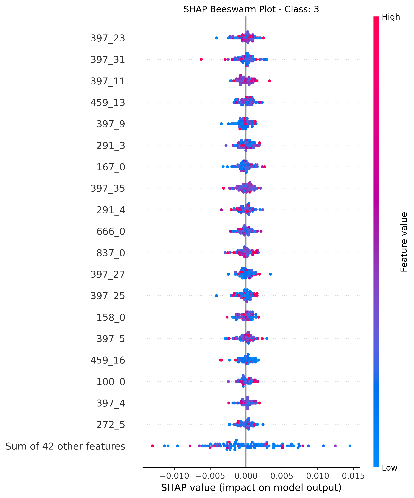
Details
This beeswarm plot shows SHAP values for Class 3 predictions (failure expected within 6-12 hours). The visualization helps identify critical features that distinguish imminent failures from longer-term failure predictions, showing the model's decision boundary for urgent maintenance needs.
Beeswarm Plot - Class 2 (12-24 Hour Failure)
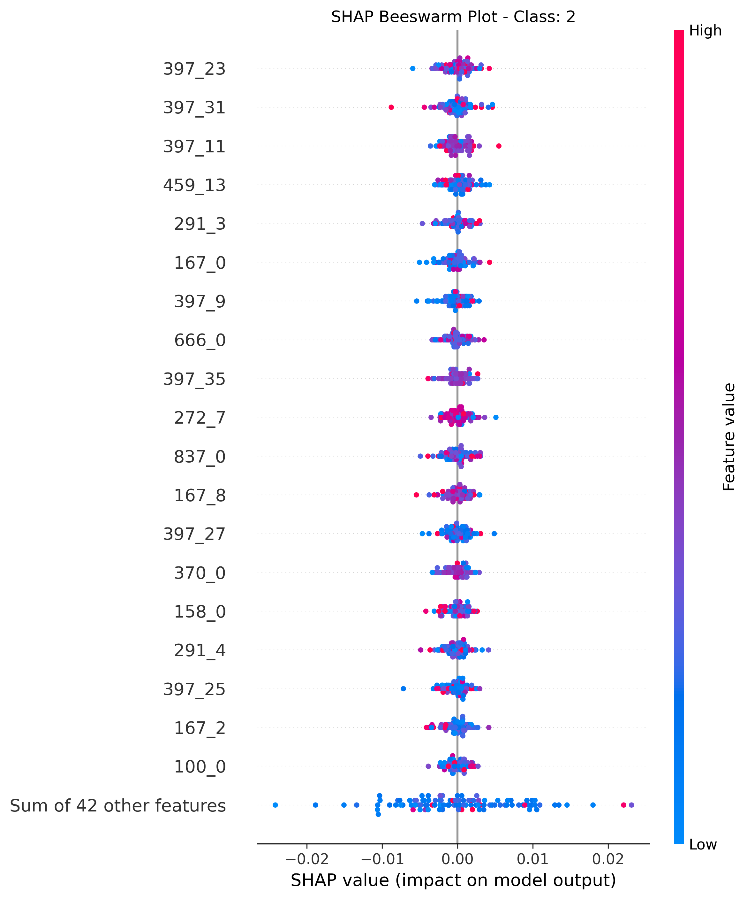
Details
This beeswarm plot illustrates SHAP values for Class 2 predictions (failure expected within 12-24 hours). The density and spread of points reveal which features are most consistently important for this failure time window and how their values influence the model's confidence in Class 2 predictions.
Beeswarm Plot - Class 1 (24-48 Hour Failure)
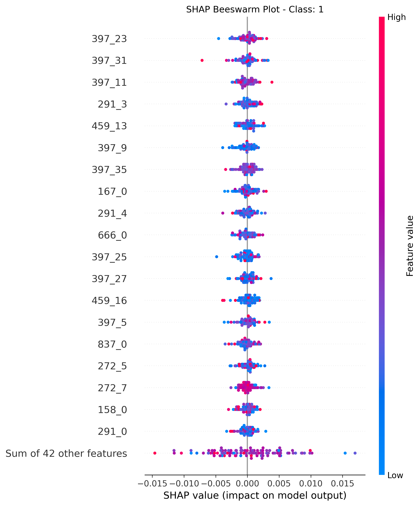
Details
This beeswarm plot displays SHAP values for Class 1 predictions (failure expected within 24-48 hours). The distribution of dots shows how different feature values contribute to Class 1 predictions across all instances in the dataset. Red dots indicate positive SHAP values (supporting Class 1), while blue dots indicate negative values (opposing Class 1).
Beeswarm Plot - Class 0 (No Failure)
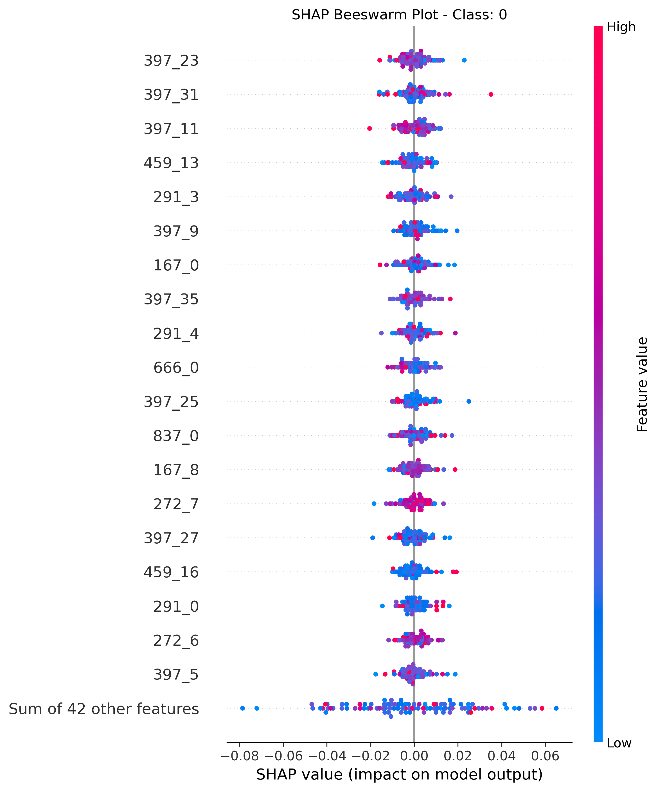
Details
This beeswarm plot shows the SHAP (SHapley Additive exPlanations) values for Class 0 predictions (no failure within 48 hours). Each dot represents a single instance, and the position on the x-axis indicates the feature's impact on pushing the prediction toward or away from Class 0. Features are sorted by importance, with the most influential features at the top.
Violin Plot - Class 4 (0-6 Hour Failure)
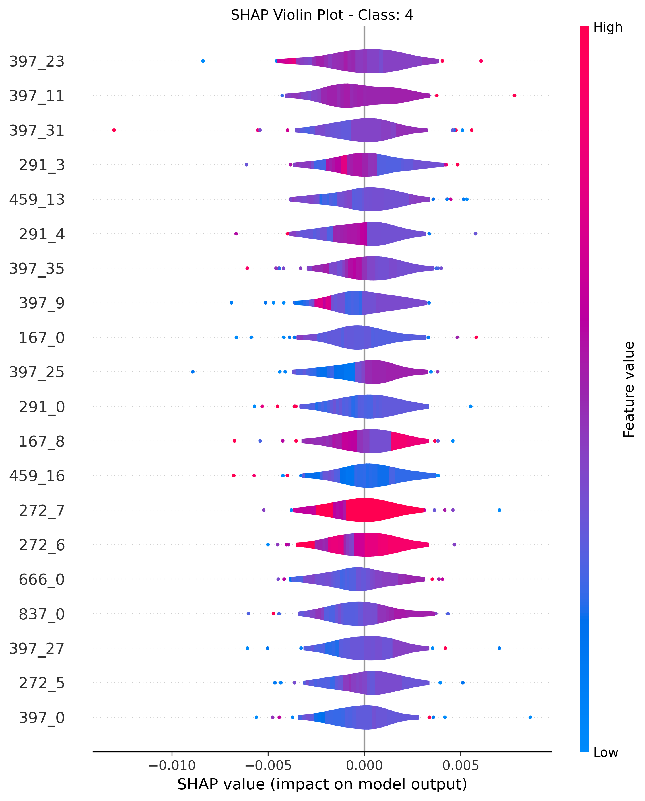
Details
This violin plot presents SHAP value distributions for Class 4 predictions (immediate failure). The shapes indicate how feature contributions are distributed for the most critical failure category, revealing which features have stable versus highly variable impacts when predicting imminent system failure.
Violin Plot - Class 3 (6-12 Hour Failure)
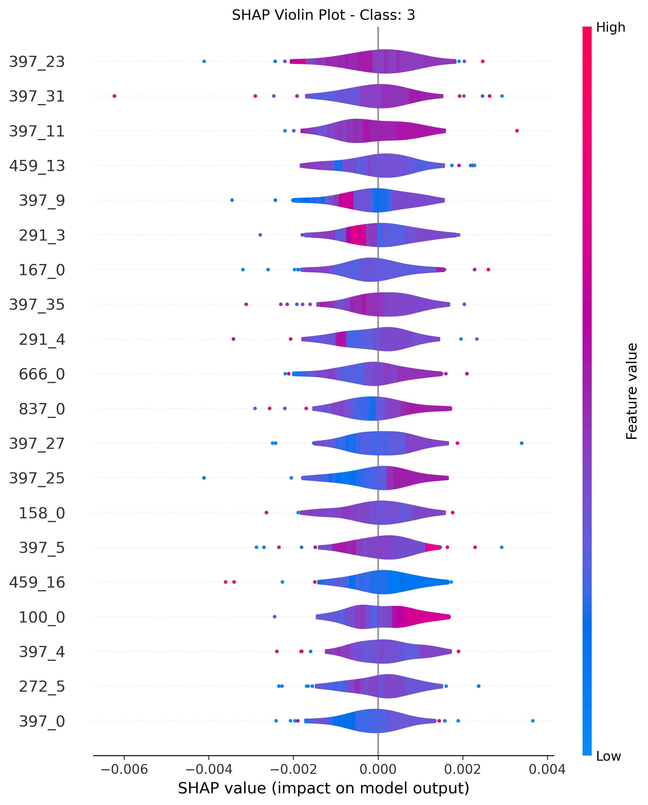
Details
This violin plot shows SHAP value distributions for Class 3 predictions. The density patterns reveal how feature contributions are distributed for near-term failure predictions (6-12 hours), indicating which features show consistent patterns versus high variability in their predictive impact.
Violin Plot - Class 2 (12-24 Hour Failure)
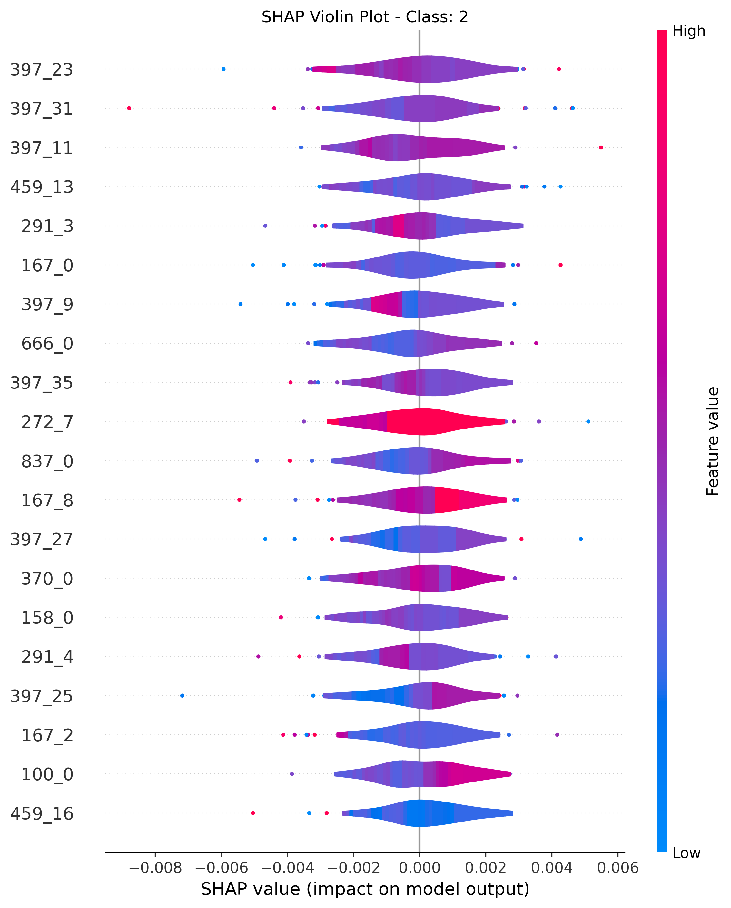
Details
This violin plot illustrates the SHAP value distributions for Class 2 predictions. The visualization reveals the spread and concentration of feature impacts for 12-24 hour failure predictions, helping identify which features have consistent versus variable effects on this intermediate failure timeframe.
Violin Plot - Class 1 (24-48 Hour Failure)
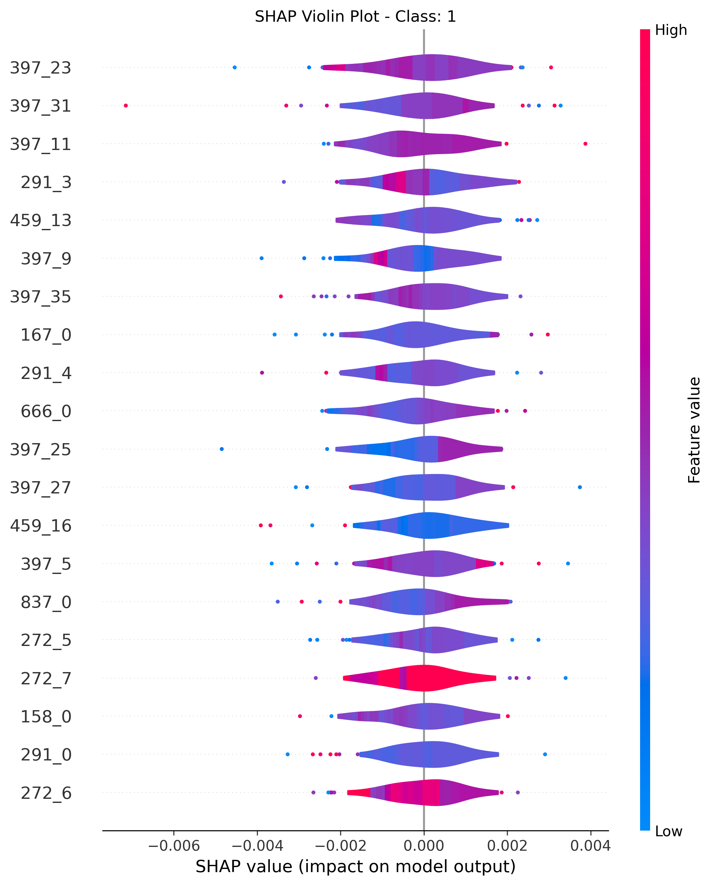
Details
This violin plot displays the distribution of SHAP values for Class 1 predictions. The shape and width of each violin indicate how consistently or variably each feature contributes to 24-48 hour failure predictions. Symmetric violins suggest balanced positive and negative contributions, while skewed shapes indicate directional bias.
Violin Plot - Class 0 (No Failure)
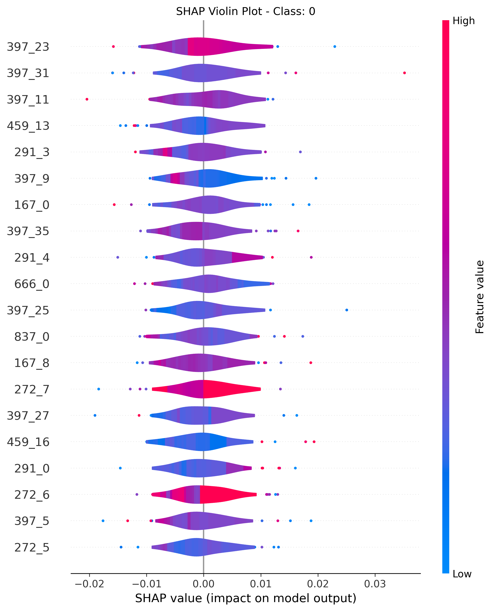
Details
This violin plot shows the distribution of SHAP values for Class 0 predictions. The violin shape reveals the density distribution of feature impacts, with wider sections indicating more common impact values. This visualization helps understand the variability and typical range of feature contributions for non-failure predictions.